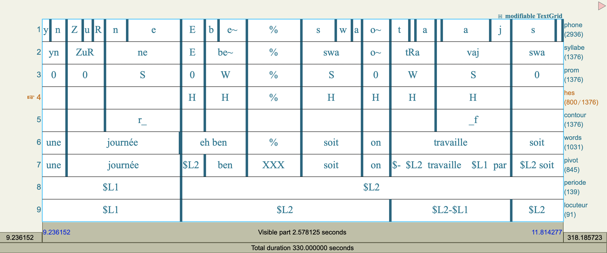

![]()
install.packages("ggplot2")Workshop: R for Linguistics (EN)
🇫🇷
FR
In this workshop, I present an introduction to the R language for the study of linguistics. R is a free, open-source programming language that is particularly popular in the natural and social sciences. We begin with a general introduction to functions for downloading, visualizing, and manipulating data structured as tables. We then continue by studying specific models for the study of language. We finish with the application of application programming interfaces (APIs) for using large language models. In all examples, we use data drawn from various areas of linguistics.
Although we cover the main concepts in the following notes, we suggest consulting the following additional resources to deepen your understanding:
- R for Data Science (2e) A freely available book in English that covers the essential functions for data visualization, manipulation, and programming in R presented in these notes.
- Humanities Data in R (2e) A book accessible in English (username and password are “hdir”) that provides more advanced methods for handling complex and multimodal data.
- Cheatsheets: graphics, data wrangling, and regular expressions
You will also find complete documentation on the various functions and packages on the The Comprehensive R Archive Network (CRAN) website.
1. Philosophy
My philosophy for teaching data science is motivated by the goal of providing the tools necessary for free exploration of data, rather than simply encouraging the use of existing processing pipelines and static models. To achieve this goal, I present this workshop organized around three principles:
- tabular data: I favor tabular data because it allows us to base our analyses on theoretical structures. These theories come from fields such as computer science, mathematics, statistics, and philosophy.
- general, theory-based functions: I favor functions from packages like
dplyrand ggplot2 rather than older functions or functions that only work with a single data type. This also helps us adapt to other programming languages such as Python, SQL, or JavaScript. - a solid foundation: We will focus on basic operations before moving on to more complex tasks.
These principles require us to focus heavily on general functions for visualizing and manipulating relatively simple data in the first sections. But, as you can see in the table of contents on the right, this work will help us progress quickly toward more complex topics… and to understand them once we get there.
2. Configuration
Like all skills, the only way to learn R is to practice by producing code yourself. To help you do this, I provide exercises that correspond to each section below. To follow along, download R, RStudio, and the examples and data below onto your own computer.
The exercises apply and deepen the topics covered using additional data.
There are collections of additional functions in packages. There are thousands of open-source packages. Throughout this workshop, we will use several. The most common way to download a package from R is given by the following code, in which we download the ggplot2 package.
After downloading the package, which only needs to be done once, we must load it using the following code, which is run each time we start a new session in R.
library(ggplot2)The code to download all the packages needed for the workshop is provided in the linked documents above. We will use the library function to load each required library before its first use in our code.
3. Tabular Data
We begin with data on the production of English vowels from a well-known study of 139 speakers in 1995 (Hillenbrand et al.). I chose them because they are small enough for a first application but complex enough to be interesting.
I have prepared this collection in a CSV file. You can also save your data in CSV format using any spreadsheet application such as LibreOffice, Google Sheets, or Excel. To load this data into R, we can use the read_csv2 function from the readr package. This function requires an argument specifying the file path relative to the code. Here is an example of loading the English vowel production data.
library(readr)
read_csv2("donnees/hillenbrand_voyelle_eng.csv")# A tibble: 1,668 × 9
id groupe api xsampa dur f0 f1 f2 f3
<dbl> <chr> <chr> <chr> <dbl> <dbl> <dbl> <dbl> <dbl>
1 1 fille æ { 257 238 630 2423 3166
2 1 fille ɑ A 212 241 831 1676 2602
3 1 fille ɔ O 242 247 725 1384 2642
4 1 fille ɛ E 184 214 713 2095 3129
5 1 fille e e 222 230 534 2690 3335
6 1 fille ɜ˞ 3' 227 240 608 1733 2159
7 1 fille ɪ I 197 263 551 2393 3324
8 1 fille i i 237 277 554 3022 3541
9 1 fille o o 267 250 693 1235 2850
10 1 fille ʊ U 184 247 553 1495 2868
# ℹ 1,658 more rowsWe see that this function returns an object called a “tibble”. In R, a tibble is the structure in which we load data structured as a table. The object above has 1668 rows and 8 columns. Each row shows the metadata of a speaker and the phonetic measurements of a vowel. By default, we only see the first ten rows. For each column, there is a name (id, groupe, etc.) and a data type. Numeric columns have the type <dbl>, an abbreviation of “double” in the expression “double-precision floating-point number”. Columns containing character strings have the type <chr>, an abbreviation of the word “character”. We will see that these structures are essential for all stages of data analysis in R.
In the code above, we created and printed a tibble. However, after running the code the tibble no longer exists in R. To save it, we must assign the function’s output to a name using an arrow (less-than sign and minus sign). Here, we save the tibble in the object phone.
phone <- read_csv2("donnees/hillenbrand_voyelle_eng.csv")Then, after execution, we can use the phone object in any other task. For example, in the next section, we will visualize this data with a language suited to exploring quantitative information.
4. Visualize
Visualization is an essential step in data exploration. We will apply a general language called the “grammar of graphics” to describe and code visualizations in R. We need a little theory before continuing, but this framework makes complex visualizations relatively easy to produce.
In the grammar of graphics, a layer consists of three elements:
- a tibble: The object containing the information to visualize.
- a geometry: The shape corresponding to each row of the tibble. The visualization consists of one shape per row.
- aesthetics: The associations between columns of the tibble and the parameters of each shape.
A visualization consists of one or more layers. An example helps clarify how these parts can correspond to graphical elements. Here is the code to create a visualization of our phone tibble with a point for each row, with horizontal position indicated by the fundamental frequency (f0) and vertical position indicated by the vowel duration (dur).
library(ggplot2)
phone |>
ggplot() +
geom_point(aes(x = f0, y = dur)){kind=link}
In this example, we start with the name of a tibble (phone) followed by the symbol |>. This symbol is called a “pipe”. It passes the tibble to the next steps. This construction allows us to adapt the order of functions and makes them easier to read: p(h(g(f(x)))) becomes x |> f() |> g() |> h() |> p().
We continue with the ggplot() function to indicate that we want to create a visualization. In the last line, we apply the geom_point function to specify the geometry. Inside the function, we put the aes() function (for aesthetic) with the associations between column names and horizontal and vertical positions. By convention, the grammar of graphics uses the letter x for the horizontal dimension and y for the vertical dimension.
As in the example above, the point geometry has two required aesthetics (x and y). There are other optional aesthetics that can be added to enhance the information conveyed by the visualization. For example, there is a colour aesthetic that allows the colour of each point to be changed based on a column of the tibble. Here is an example where colour indicates the speaker’s group.
phone |>
ggplot() +
geom_point(aes(x = f0, y = dur, colour = groupe)){kind=link}
Already, this visualization shows some correspondences between the columns. We see that the difference in fundamental frequency corresponds to a separation between men and the others. And that there may be a correspondence where men have slightly shorter durations than women and children.
The link between colours and groups is not explicit in our code. The grammar of graphics system can choose colours automatically. The same was true for the horizontal and vertical positions. But often we need to change them. To specify the relationship between aesthetics and the actual elements of a graph, we can apply scales. Scales can be added as another line of our code. Here is an example where we modify the colours using a palette adapted for colour-blind people.
phone |>
ggplot() +
geom_point(aes(x = f0, y = dur, colour = groupe)) +
scale_colour_viridis_d()
Now let’s look at the most common visualization for phonetic data, which shows the relationship between the first two formants F1 and F2. This graph is essentially the same thing: points with names f2 and f1, respectively, assigned to the x and y aesthetics. But there is a complexity. In order to match the shape of the tongue for someone looking to their right, we need to reverse the axis directions. This requires applying the scale_x_reverse() and scale_y_reverse() scales. The following example gives the correct form.
phone |>
ggplot() +
geom_point(aes(x = f2, y = f1)) +
scale_x_reverse() +
scale_y_reverse()
This visualization shows the classic triangular shape of the vowel space. Suppose we want to see which vowels correspond to these points. How could we do that? We need to apply a new geometry: geom_text. It does not create points for each row of data. Instead, the text geometry places characters directly in the graph. We need to give a new aesthetic to indicate which column corresponds to these characters. Here is how to have a visualization with IPA symbols instead of points.
phone |>
ggplot() +
geom_text(aes(x=f2, y=f1, label = api)) +
scale_x_reverse() +
scale_y_reverse()
We can save a visualization with the ggsave function. By default, the last displayed graph is saved.
ggsave("ma_visualisation.png", height=12, width=12, units="cm")There are many geometries, aesthetics, and scales available to expand the possibilities of visualizations in the grammar of graphics. You can consult the following references: [1; 2].
We have seen the central elements of the grammar of graphics. In order to go further, we continue by studying methods for modifying tibbles with database-oriented functions.
5. Manipulating a Table
Often, it is necessary to transform a data table into another table with different or reorganized elements. In R, we can manipulate tables with a collection of functions called “verbs”. These functions have the same structure: you give them a tibble and receive a new tibble. This structure allows any number of functions to be applied to a tibble. There are about 50 verbs. Fortunately, we only need to learn 12 to perform all possible operations. In this section, we start with the first 8 verbs.
The slice_head verb slices the first n rows of a tibble, where n is an argument in the function. Like all verbs, we use a pipe (|>) to pass the data object to the function.
library(dplyr)
phone |>
slice_head(n = 4)# A tibble: 4 × 9
id groupe api xsampa dur f0 f1 f2 f3
<dbl> <chr> <chr> <chr> <dbl> <dbl> <dbl> <dbl> <dbl>
1 1 fille æ { 257 238 630 2423 3166
2 1 fille ɑ A 212 241 831 1676 2602
3 1 fille ɔ O 242 247 725 1384 2642
4 1 fille ɛ E 184 214 713 2095 3129The filter verb keeps rows based on a relationship between values. To apply this function, we place an expression inside it with column names. Rows where the expression is true will be kept. Here is an example to find the rows for the vowel «u».
phone |>
filter(api == "u")# A tibble: 139 × 9
id groupe api xsampa dur f0 f1 f2 f3
<dbl> <chr> <chr> <chr> <dbl> <dbl> <dbl> <dbl> <dbl>
1 1 fille u u 253 246 502 1540 3176
2 2 fille u u 327 287 559 1312 2870
3 3 fille u u 304 194 506 2378 2991
4 4 fille u u 292 258 503 1104 3346
5 5 fille u u 260 240 481 1226 3131
6 6 fille u u 303 330 609 1658 2644
7 7 fille u u 262 228 440 1124 3117
8 8 fille u u 211 255 503 1119 3100
9 9 fille u u 275 215 463 1676 2976
10 10 fille u u 246 197 430 1448 2896
# ℹ 129 more rowsTo reorganize rows by values in one or more columns, we apply the arrange function. We simply indicate the column name inside the function.
phone |>
arrange(dur)# A tibble: 1,668 × 9
id groupe api xsampa dur f0 f1 f2 f3
<dbl> <chr> <chr> <chr> <dbl> <dbl> <dbl> <dbl> <dbl>
1 74 home ʊ U 111 156 463 1086 2453
2 71 home ɛ E 125 128 636 1893 2765
3 90 home u u 125 171 374 887 2478
4 74 home ʌ V 128 152 622 1285 2472
5 59 home ɪ I 134 145 424 1913 2556
6 74 home ɪ I 134 165 440 2119 2694
7 75 home ʊ U 134 160 500 1067 2435
8 7 fille ɛ E 135 205 605 2445 3265
9 22 fille ɪ I 137 229 447 2645 3302
10 64 home ɛ E 138 128 615 1624 2265
# ℹ 1,658 more rowsReorganizing rows by default sorts them in ascending order. For descending order, we add the desc function.
phone |>
arrange(desc(dur))# A tibble: 1,668 × 9
id groupe api xsampa dur f0 f1 f2 f3
<dbl> <chr> <chr> <chr> <dbl> <dbl> <dbl> <dbl> <dbl>
1 93 femme æ { 486 214 624 2442 3091
2 19 fille e e 465 232 463 2745 3155
3 111 femme ɔ O 465 226 698 1127 2886
4 93 femme ɔ O 464 211 760 1225 2796
5 115 femme æ { 461 220 646 2406 3283
6 31 garçon æ { 456 227 682 2638 3510
7 126 femme ɑ A 455 208 952 1676 2862
8 93 femme e e 453 220 477 2704 3102
9 24 fille æ { 451 220 643 2434 3326
10 93 femme ɑ A 443 209 883 1682 2962
# ℹ 1,658 more rowsTo demonstrate the application of multiple verbs, note that it is often efficient to apply arrange then slice_head to find rows with extreme values. We see that each line, except the last, has a pipe at the end.
phone |>
arrange(desc(f1)) |>
slice_head(n = 10)# A tibble: 10 × 9
id groupe api xsampa dur f0 f1 f2 f3
<dbl> <chr> <chr> <chr> <dbl> <dbl> <dbl> <dbl> <dbl>
1 41 garçon ɑ A 299 233 1316 1752 3113
2 29 garçon ɑ A 298 208 1312 1820 3308
3 22 fille ɑ A 238 228 1205 1605 2708
4 35 garçon ɑ A 321 245 1197 1734 3187
5 123 femme ɑ A 283 241 1163 1685 3250
6 38 garçon ɑ A 317 200 1154 1932 3044
7 25 fille ɑ A 270 223 1147 1553 2877
8 45 garçon ɑ A 259 234 1145 1655 3062
9 138 femme ɑ A 326 224 1145 1455 3272
10 44 garçon ɑ A 220 235 1129 2005 2826The mutate verb adds a column to the table. This works with a name for the new column and a formula to create it from other columns. For example, below is an example of creating a dur_s column (duration in seconds) defined as duration (in milliseconds) divided by 1000.
phone |>
mutate(dur_s = dur / 1000)# A tibble: 1,668 × 10
id groupe api xsampa dur f0 f1 f2 f3 dur_s
<dbl> <chr> <chr> <chr> <dbl> <dbl> <dbl> <dbl> <dbl> <dbl>
1 1 fille æ { 257 238 630 2423 3166 0.257
2 1 fille ɑ A 212 241 831 1676 2602 0.212
3 1 fille ɔ O 242 247 725 1384 2642 0.242
4 1 fille ɛ E 184 214 713 2095 3129 0.184
5 1 fille e e 222 230 534 2690 3335 0.222
6 1 fille ɜ˞ 3' 227 240 608 1733 2159 0.227
7 1 fille ɪ I 197 263 551 2393 3324 0.197
8 1 fille i i 237 277 554 3022 3541 0.237
9 1 fille o o 267 250 693 1235 2850 0.267
10 1 fille ʊ U 184 247 553 1495 2868 0.184
# ℹ 1,658 more rowsThe select verb selects columns based on their names. It is useful if the size of a table becomes too large.
phone |>
select(f1, f2)# A tibble: 1,668 × 2
f1 f2
<dbl> <dbl>
1 630 2423
2 831 1676
3 725 1384
4 713 2095
5 534 2690
6 608 1733
7 551 2393
8 554 3022
9 693 1235
10 553 1495
# ℹ 1,658 more rowsWe finish this section with two verbs that often work together: group_by and summarise. Like mutate, the summarise verb allows creating new columns. But it reduces rows to a summary by applying functions like mean (average) or sd (standard deviation). The group_by function indicates by which column (or columns) the summary is applied. This example can clarify the relationship between the two. Here is the code to calculate the mean F1 and F2 values by vowel.
phone |>
group_by(api) |>
summarise(
f1_m = mean(f1),
f2_m = mean(f2)
)# A tibble: 12 × 3
api f1_m f2_m
<chr> <dbl> <dbl>
1 e 526. 2426.
2 i 412. 2725.
3 o 551. 1030.
4 u 445. 1167.
5 æ 663. 2257.
6 ɑ 891. 1508.
7 ɔ 767. 1173.
8 ɛ 686. 2050.
9 ɜ˞ 529. 1564.
10 ɪ 476. 2323.
11 ʊ 520. 1286.
12 ʌ 708. 1380.We can save the result of a data manipulation using an arrow (<-). This can then be saved as a file that we can open in other software using write_csv2. Here is an example:
phone_moyenne <- phone |>
group_by(api) |>
summarise(
f1_m = mean(f1),
f2_m = mean(f2)
)
write_csv2(phone_moyenne, "donnees/phone_moyenne.csv")The power of the summarise function becomes clearer when applied to visualizations. With a combination of verbs and graph layers, we have the tools to visualize the mean formants of each vowel in the data.
phone |>
group_by(api) |>
summarise(
f1_m = mean(f1),
f2_m = mean(f2)
) |>
ggplot() +
geom_point(aes(x=f2_m, y=f1_m), size = 8) +
geom_text(aes(x=f2_m, y=f1_m, label = api), colour="#fff") +
scale_x_reverse() +
scale_y_reverse() {kind=link}
I would like to mention here a very useful base R function for exploring data: table. It can count the number of values in a column, for example (note the $ symbol between the table name and the column name):
table(phone$api)
æ ɑ e ɛ ɜ˞ i ɪ o ɔ u ʊ ʌ
139 139 139 139 139 139 139 139 139 139 139 139 Or, it can also count combinations of two columns:
table(phone$api, phone$groupe)
femme fille garçon home
æ 48 27 19 45
ɑ 48 27 19 45
e 48 27 19 45
ɛ 48 27 19 45
ɜ˞ 48 27 19 45
i 48 27 19 45
ɪ 48 27 19 45
o 48 27 19 45
ɔ 48 27 19 45
u 48 27 19 45
ʊ 48 27 19 45
ʌ 48 27 19 45Now we have a solid foundation of verbs and visualization functions. All these elements are at the heart of data science. In the next section, we add modelling functions.
6. Statistical Models
Now that we know how to manipulate data, we can start working with new datasets. Here, we load a dataset from a keystroke logger in which every keystroke made during a writing session is recorded.
touches <- read_csv2("donnees/keylog-touches.csv.bz2", na="NA")
touches# A tibble: 1,145,051 × 7
id t0 t1 dur dur_apres touche code
<chr> <dbl> <dbl> <dbl> <dbl> <chr> <chr>
1 R_00RbUqO7jXLDItP 20914. 20978. 64.4 80.1 "I" KeyI
2 R_00RbUqO7jXLDItP 21146. 21226. 80.1 55.8 "f" KeyF
3 R_00RbUqO7jXLDItP 21234. 21290. 55.8 80.2 "" Space
4 R_00RbUqO7jXLDItP 22074. 22154. 80.2 88.2 "I" KeyI
5 R_00RbUqO7jXLDItP 22306. 22394. 88.2 64.3 "" Space
6 R_00RbUqO7jXLDItP 23674. 23739. 64.3 56.1 "c" KeyC
7 R_00RbUqO7jXLDItP 23818. 23874. 56.1 46.6 "o" KeyO
8 R_00RbUqO7jXLDItP 24044. 24090. 46.6 64 "u" KeyU
9 R_00RbUqO7jXLDItP 25066. 25130. 64 79.8 "l" KeyL
10 R_00RbUqO7jXLDItP 25170. 25250 79.8 72.3 "d" KeyD
# ℹ 1,145,041 more rowsOnce the data is loaded, the following block performs a preparation step where we filter observations to retain only two specific key types, here the space and the period. This selection makes it easier to compare the keystroke duration of these two categories.
touches_sub <- touches |>
filter(code %in% c("Space", "Period"))After this preparation, we apply a statistical test to compare means. Student’s t-test allows us to evaluate whether the measured keystroke durations differ significantly between the two key types retained. The idea is to verify whether the space and period have systematically different press times, which could reflect specific typing habits or mechanical constraints.
t.test(dur ~ code, data = touches_sub)
Welch Two Sample t-test
data: dur by code
t = 21.903, df = 11523, p-value < 2.2e-16
alternative hypothesis: true difference in means between group Period and group Space is not equal to 0
95 percent confidence interval:
6.915632 8.275116
sample estimates:
mean in group Period mean in group Space
86.04275 78.44737 The results show that there is a significant difference, and that the mean duration of a period (86.04 ms) is greater than that of a space (78.45 ms).
The following block extends the analysis to another angle. This time, it is a one-way ANOVA test that uses the session identifier as the explanatory variable. The goal is to estimate whether keystroke duration varies greatly from one individual to another. If the variability is large, this may indicate that interpersonal differences play a determining role in typing speed or style.
oneway.test(dur ~ id, data = touches)
One-way analysis of means (not assuming equal variances)
data: dur and id
F = 320.45, num df = 822, denom df = 349612, p-value < 2.2e-16Here again, we see that there is a difference in mean duration by session.
Finally, the last block proposes a linear regression analysis. The aim here is to understand how the duration of a keystroke might be associated with the duration that immediately follows it. The model seeks to determine whether pressing a key for longer or shorter affects how quickly the next key is pressed.
summary(lm(dur_apres ~ dur, data = touches))
Call:
lm(formula = dur_apres ~ dur, data = touches)
Residuals:
Min 1Q Median 3Q Max
-768972 -17 1 20 9042
Coefficients:
Estimate Std. Error t value Pr(>|t|)
(Intercept) 71.33665 1.64052 43.484 < 2e-16 ***
dur 0.06564 0.01909 3.438 0.000586 ***
---
Signif. codes: 0 '***' 0.001 '**' 0.01 '*' 0.05 '.' 0.1 ' ' 1
Residual standard error: 765.1 on 1145049 degrees of freedom
Multiple R-squared: 1.032e-05, Adjusted R-squared: 9.45e-06
F-statistic: 11.82 on 1 and 1145049 DF, p-value: 0.0005857The results show that there is a positive relationship between the duration of a key and the duration of the next key. But the coefficient of determination (also known as the “percentage of variance explained” or “Multiple R-squared”) is very small, indicating that this relationship is not very strong.
7. Multiple Tables
In this section, we will learn the last verbs we need. These verbs help us combine information from multiple tables and complete the essentials of our verb toolkit.
We begin by loading a second data table containing descriptive information about users in the typing sessions. This file generally groups metadata such as language, declared proficiency level, or other characteristics that help better contextualize the measurements.
meta <- read_csv2("donnees/keylog-meta.csv.bz2")
meta# A tibble: 823 × 4
id age lang cefr
<chr> <dbl> <chr> <chr>
1 R_2EGIsZARLydD3Uc 25 Italian C1/C2
2 R_1obCaysaZCWZXoG 22 Spanish B1/B2
3 R_3fqTek829k38iCk 22 Polish B1/B2
4 R_brxD7Q5ZnPW8Gn7 43 English C1/C2
5 R_1k1RE78cBbZyZMA 23 Polish B1/B2
6 R_1NwuZMzRkVIR0WT 32 English C1/C2
7 R_2t8LOS9nQDBQPA8 24 Spanish C1/C2
8 R_239Q0X5YLwB7U6Z 28 English C1/C2
9 R_10xbkjEmnsusfb1 32 Polish B1/B2
10 R_10CbLBzAnYKgWxB 21 Polish B1/B2
# ℹ 813 more rowsWe then import a third table, this time focused on measures related to the words themselves. This might include, for example, keystroke durations associated with each typed word, providing more synthetic information than a key-by-key analysis.
mots <- read_csv2("donnees/keylog-mots.csv.bz2")
mots# A tibble: 210,337 × 6
id mot char_mot dur_mot d1 d2
<chr> <chr> <dbl> <dbl> <dbl> <dbl>
1 R_00RbUqO7jXLDItP If 2 312. 928. 848.
2 R_00RbUqO7jXLDItP I 1 80.2 1600. 1520
3 R_00RbUqO7jXLDItP could 5 1576. 2168. 2088.
4 R_00RbUqO7jXLDItP choose 6 945. 976. 904.
5 R_00RbUqO7jXLDItP to 2 200. 930. 849.
6 R_00RbUqO7jXLDItP be 2 151 528. 456.
7 R_00RbUqO7jXLDItP any 3 440. 264 168.
8 R_00RbUqO7jXLDItP animal 6 1560 976. 888
9 R_00RbUqO7jXLDItP for 3 264. 248 176.
10 R_00RbUqO7jXLDItP one 3 312 1120. 1048.
# ℹ 210,327 more rowsOnce these two tables are available, we perform a join between them based on a common identifier. This operation allows us to combine the characteristics present in the metadata with the word-level observations, enriching each row with additional contextual information. The result is a merged table where durations or other word-level measures can be interpreted in terms of user profiles. Here is an example where we use the participant identifier (id) to merge them.
mots |>
left_join(meta, by = "id")# A tibble: 210,337 × 9
id mot char_mot dur_mot d1 d2 age lang cefr
<chr> <chr> <dbl> <dbl> <dbl> <dbl> <dbl> <chr> <chr>
1 R_00RbUqO7jXLDItP If 2 312. 928. 848. 28 Italian C1/C2
2 R_00RbUqO7jXLDItP I 1 80.2 1600. 1520 28 Italian C1/C2
3 R_00RbUqO7jXLDItP could 5 1576. 2168. 2088. 28 Italian C1/C2
4 R_00RbUqO7jXLDItP choose 6 945. 976. 904. 28 Italian C1/C2
5 R_00RbUqO7jXLDItP to 2 200. 930. 849. 28 Italian C1/C2
6 R_00RbUqO7jXLDItP be 2 151 528. 456. 28 Italian C1/C2
7 R_00RbUqO7jXLDItP any 3 440. 264 168. 28 Italian C1/C2
8 R_00RbUqO7jXLDItP animal 6 1560 976. 888 28 Italian C1/C2
9 R_00RbUqO7jXLDItP for 3 264. 248 176. 28 Italian C1/C2
10 R_00RbUqO7jXLDItP one 3 312 1120. 1048. 28 Italian C1/C2
# ℹ 210,327 more rowsThe following block exploits this join to group by a variable describing language proficiency level. After grouping observations by this criterion, the median of a specific timing measure is calculated, providing a robust performance indicator for each level. The final sort highlights the levels with the highest median, facilitating global comparison.
mots |>
left_join(meta, by = "id") |>
group_by(cefr) |>
summarise(mu = median(d1)) |>
arrange(desc(mu))# A tibble: 3 × 2
cefr mu
<chr> <dbl>
1 A1/A2 789.
2 B1/B2 592
3 C1/C2 448 Finally, on a similar principle, the analysis is repeated by grouping the data by declared language. The aim is to examine whether word performance varies noticeably from one native language to another.
mots |>
left_join(meta, by = "id") |>
group_by(lang) |>
summarise(mu = median(d1)) |>
arrange(desc(mu))# A tibble: 8 × 2
lang mu
<chr> <dbl>
1 Greek 608.
2 Polish 520
3 Portuguese 503.
4 Spanish 499
5 Italian 486.
6 French 447.
7 German 441
8 English 435 We see that English students typed the fastest.
8. Sliding Windows
We have covered horizontal analyses in which we only see relationships between values within a row. With summarise and the statistical model functions, we have also covered vertical analyses in which we process all the values in a column across all rows, or all groups of rows. In this section, we go further by using what are called sliding window functions. These functions help us find relationships between observations based on the order of rows in our data. Sliding window functions are very useful when working with time series, as is often the case in linguistics.
We start by creating a simplified table containing only the essential variables to illustrate the use of window functions.
touches_min <- select(touches, id, t0, t1, dur, touche, code)
touches_min# A tibble: 1,145,051 × 6
id t0 t1 dur touche code
<chr> <dbl> <dbl> <dbl> <chr> <chr>
1 R_00RbUqO7jXLDItP 20914. 20978. 64.4 "I" KeyI
2 R_00RbUqO7jXLDItP 21146. 21226. 80.1 "f" KeyF
3 R_00RbUqO7jXLDItP 21234. 21290. 55.8 "" Space
4 R_00RbUqO7jXLDItP 22074. 22154. 80.2 "I" KeyI
5 R_00RbUqO7jXLDItP 22306. 22394. 88.2 "" Space
6 R_00RbUqO7jXLDItP 23674. 23739. 64.3 "c" KeyC
7 R_00RbUqO7jXLDItP 23818. 23874. 56.1 "o" KeyO
8 R_00RbUqO7jXLDItP 24044. 24090. 46.6 "u" KeyU
9 R_00RbUqO7jXLDItP 25066. 25130. 64 "l" KeyL
10 R_00RbUqO7jXLDItP 25170. 25250 79.8 "d" KeyD
# ℹ 1,145,041 more rowsThe following block illustrates the use of several classic window functions such as lag and lead, frequently used in the analysis of time series or ordered sequences. They allow us to “see” the rows before and after. The n argument gives the number of rows to access.
touches_min |>
arrange(id, t0) |>
group_by(id) |>
mutate(
diff_avant = t0 - lag(t0, n=1),
diff_apres = lead(t0, n=1) - t0,
gap_avant = t0 - lag(t1, n=1),
gap_apres = lead(t0, n=1) - t1,
)# A tibble: 1,145,051 × 10
# Groups: id [823]
id t0 t1 dur touche code diff_avant diff_apres gap_avant
<chr> <dbl> <dbl> <dbl> <chr> <chr> <dbl> <dbl> <dbl>
1 R_00RbUqO7j… 20914. 20978. 64.4 "I" KeyI NA 232. NA
2 R_00RbUqO7j… 21146. 21226. 80.1 "f" KeyF 232. 88.1 168.
3 R_00RbUqO7j… 21234. 21290. 55.8 "" Space 88.1 840. 8
4 R_00RbUqO7j… 22074. 22154. 80.2 "I" KeyI 840. 232. 784
5 R_00RbUqO7j… 22306. 22394. 88.2 "" Space 232. 1368. 152.
6 R_00RbUqO7j… 23674. 23739. 64.3 "c" KeyC 1368. 144. 1280.
7 R_00RbUqO7j… 23818. 23874. 56.1 "o" KeyO 144. 225. 79.8
8 R_00RbUqO7j… 24044. 24090. 46.6 "u" KeyU 225. 1023. 169.
9 R_00RbUqO7j… 25066. 25130. 64 "l" KeyL 1023. 104. 976
10 R_00RbUqO7j… 25170. 25250 79.8 "d" KeyD 104. 120 39.9
# ℹ 1,145,041 more rows
# ℹ 1 more variable: gap_apres <dbl>There are other window functions in the slider package that help us calculate more complex summaries. For example, slide_mean gives the mean of a window around each row of a specified size.
library(slider)
touches_min |>
filter(id == "R_00RbUqO7jXLDItP") |>
arrange(t0) |>
mutate(
dur_moyenne10 = slide_mean(dur, before=10),
dur_moyenne100 = slide_mean(dur, before=100),
dur_moyenne1000 = slide_mean(dur, before=1000)
) |>
ggplot() +
geom_line(aes(x=t0, y=dur_moyenne10), colour = "#fa8072") +
geom_line(aes(x=t0, y=dur_moyenne100), colour = "#808000") +
geom_line(aes(x=t0, y=dur_moyenne1000), colour = "#6fa8dc") 
Finally, the last block explores the use of larger sliding windows to compute moving averages over different horizons. After filtering for a specific user, we order their keystrokes and then apply several window sizes to progressively smooth the observed durations. This gives curves more or less sensitive to local variations: a small window closely follows instantaneous changes, while a large window highlights broader trends. The resulting graph overlays these different averages, offering an intuitive visualization of the evolution of typing rhythm over time.
9. Character Strings
In this section, we introduce the use of functions from the stringi package to manipulate text data . These functions have the same form: the name starts with stri_ and the first argument is a character sequence. For example, here is the stri_length function that counts the number of characters in a sequence.
library(stringi)
mots |>
mutate(nchar = stri_length(mot))# A tibble: 210,337 × 7
id mot char_mot dur_mot d1 d2 nchar
<chr> <chr> <dbl> <dbl> <dbl> <dbl> <int>
1 R_00RbUqO7jXLDItP If 2 312. 928. 848. 2
2 R_00RbUqO7jXLDItP I 1 80.2 1600. 1520 1
3 R_00RbUqO7jXLDItP could 5 1576. 2168. 2088. 5
4 R_00RbUqO7jXLDItP choose 6 945. 976. 904. 6
5 R_00RbUqO7jXLDItP to 2 200. 930. 849. 2
6 R_00RbUqO7jXLDItP be 2 151 528. 456. 2
7 R_00RbUqO7jXLDItP any 3 440. 264 168. 3
8 R_00RbUqO7jXLDItP animal 6 1560 976. 888 6
9 R_00RbUqO7jXLDItP for 3 264. 248 176. 3
10 R_00RbUqO7jXLDItP one 3 312 1120. 1048. 3
# ℹ 210,327 more rowsThe following block combines this new information with that from the metadata table. After joining the two tables on the user identifier, we group the words by language, then calculate the average word length for each group. This type of summary helps compare the different languages present in the corpus, examining whether some systematically have longer words, which could influence the observed typing dynamics.
mots |>
mutate(nchar = stri_length(mot)) |>
left_join(meta, by = "id") |>
group_by(lang) |>
summarise(mu = mean(nchar, na.rm=TRUE)) |>
arrange(desc(mu))# A tibble: 8 × 2
lang mu
<chr> <dbl>
1 German 4.47
2 Greek 4.47
3 French 4.45
4 Portuguese 4.43
5 Italian 4.42
6 Polish 4.39
7 Spanish 4.38
8 English 4.38Most stringi functions require a fixed argument to specify what they do. For example, the stri_detect function indicates the presence of a character sequence. Here we apply it to indicate which words contain the character <a> using the fixed argument.
mots |>
mutate(nombre_a = stri_detect(mot, fixed = "a"))# A tibble: 210,337 × 7
id mot char_mot dur_mot d1 d2 nombre_a
<chr> <chr> <dbl> <dbl> <dbl> <dbl> <lgl>
1 R_00RbUqO7jXLDItP If 2 312. 928. 848. FALSE
2 R_00RbUqO7jXLDItP I 1 80.2 1600. 1520 FALSE
3 R_00RbUqO7jXLDItP could 5 1576. 2168. 2088. FALSE
4 R_00RbUqO7jXLDItP choose 6 945. 976. 904. FALSE
5 R_00RbUqO7jXLDItP to 2 200. 930. 849. FALSE
6 R_00RbUqO7jXLDItP be 2 151 528. 456. FALSE
7 R_00RbUqO7jXLDItP any 3 440. 264 168. TRUE
8 R_00RbUqO7jXLDItP animal 6 1560 976. 888 TRUE
9 R_00RbUqO7jXLDItP for 3 264. 248 176. FALSE
10 R_00RbUqO7jXLDItP one 3 312 1120. 1048. FALSE
# ℹ 210,327 more rowsOften, we do not just want to search for a given sequence. Instead, we need to find rows that match a set of characters. For this, we apply “regular expressions”, a language for describing patterns in character sequences. For example, the expression [A-Z] indicates uppercase Latin letters.
mots |>
mutate(nombre_maj = stri_detect(mot, regex = "[A-Z]"))# A tibble: 210,337 × 7
id mot char_mot dur_mot d1 d2 nombre_maj
<chr> <chr> <dbl> <dbl> <dbl> <dbl> <lgl>
1 R_00RbUqO7jXLDItP If 2 312. 928. 848. TRUE
2 R_00RbUqO7jXLDItP I 1 80.2 1600. 1520 TRUE
3 R_00RbUqO7jXLDItP could 5 1576. 2168. 2088. FALSE
4 R_00RbUqO7jXLDItP choose 6 945. 976. 904. FALSE
5 R_00RbUqO7jXLDItP to 2 200. 930. 849. FALSE
6 R_00RbUqO7jXLDItP be 2 151 528. 456. FALSE
7 R_00RbUqO7jXLDItP any 3 440. 264 168. FALSE
8 R_00RbUqO7jXLDItP animal 6 1560 976. 888 FALSE
9 R_00RbUqO7jXLDItP for 3 264. 248 176. FALSE
10 R_00RbUqO7jXLDItP one 3 312 1120. 1048. FALSE
# ℹ 210,327 more rowsAfter detecting uppercase letters and recalculating word length, we filter the shortest cases to facilitate visualization. The data is then grouped by length and by the presence or absence of an uppercase letter, before calculating a median of the durations associated with typing the word. The resulting graph illustrates these trends by showing, for each length, any differences between the two word types, providing a clear visual overview of variations related to text formatting.
mots |>
mutate(has_maj = stri_detect(mot, regex = "[A-Z]")) |>
mutate(nchar = stri_length(mot)) |>
filter(nchar < 10) |>
group_by(nchar, has_maj) |>
summarise(mu = median(dur_mot)) |>
ggplot() +
geom_point(aes(x=factor(nchar), y=mu, colour = has_maj)){kind=link}
There are many other stringi functions with the same form, offering a choice of a fixed phrase or a regular expression. For example, I often use stri_count, stri_replace, stri_extract and stri_match.
We do not have time for a complete introduction to regular expressions. Here are the most common symbols for linguistics:
\w: any word character (a-z, 0-9, à, è, é, etc.)\W: the opposite, i.e., spaces, commas, periods, etc.\A: indicates the beginning of a string\Z: indicates the end of a string- ‘+’ : indicates one or more occurrences of the preceding symbol
For a reference of all the options, I recommend the Mozilla Cheatsheet, which is accessible in English or French.
10. TextGrid
In this section, we work with TextGrid format files, a format commonly used in phonetics to annotate audio recordings, originating from the Praat software [3]. We will study data from a corpus called Rhapsodie. Rhapsodie provides a syntactic and prosodic database for spoken French [4]. Here is an example of a TextGrid from the Rhapsodie corpus in Praat.

This TextGrid file contains several annotation tiers, each representing different information such as phonetic segments, prosodic contours, or other temporal markers. The annotation tiers are called “tiers”. In Praat, annotations are organized in different layers aligned by their timing.
Here we load a file from the Rhapsodie corpus into R using the readtextgrid package [5].
library(readtextgrid)
tg <- read_textgrid("donnees/rhapsodie/tg/Rhap-M0018-Pro.TextGrid")
tg# A tibble: 2,731 × 10
file tier_num tier_name tier_type tier_xmin tier_xmax xmin xmax text
<chr> <int> <chr> <chr> <dbl> <dbl> <dbl> <dbl> <chr>
1 Rhap-M001… 1 phone Interval… 0 89.7 0 0.695 _
2 Rhap-M001… 1 phone Interval… 0 89.7 0.695 0.735 e
3 Rhap-M001… 1 phone Interval… 0 89.7 0.735 0.845 s
4 Rhap-M001… 1 phone Interval… 0 89.7 0.845 0.875 a
5 Rhap-M001… 1 phone Interval… 0 89.7 0.875 0.935 a~
6 Rhap-M001… 1 phone Interval… 0 89.7 0.935 1.01 S
7 Rhap-M001… 1 phone Interval… 0 89.7 1.01 1.06 E
8 Rhap-M001… 1 phone Interval… 0 89.7 1.06 1.10 n
9 Rhap-M001… 1 phone Interval… 0 89.7 1.10 1.16 s
10 Rhap-M001… 1 phone Interval… 0 89.7 1.16 1.22 y
# ℹ 2,721 more rows
# ℹ 1 more variable: annotation_num <int>The format in R is very different from the format in Praat. In R, the temporal dimensions of the tiers are not directly linked to each other. All the data from one tier (here phone) is provided, followed by the second tier, and so on. This format is not as well suited for direct data consultation, but is rather optimized for programming.
The following block specifically extracts the tier corresponding to phonemes, called “phone” in the file. This tier contains a fine segmentation of speech where each entry represents a phonetic segment delimited in time.
tg_phone <- tg |>
filter(tier_name == "phone")
tg_phone# A tibble: 734 × 10
file tier_num tier_name tier_type tier_xmin tier_xmax xmin xmax text
<chr> <int> <chr> <chr> <dbl> <dbl> <dbl> <dbl> <chr>
1 Rhap-M001… 1 phone Interval… 0 89.7 0 0.695 _
2 Rhap-M001… 1 phone Interval… 0 89.7 0.695 0.735 e
3 Rhap-M001… 1 phone Interval… 0 89.7 0.735 0.845 s
4 Rhap-M001… 1 phone Interval… 0 89.7 0.845 0.875 a
5 Rhap-M001… 1 phone Interval… 0 89.7 0.875 0.935 a~
6 Rhap-M001… 1 phone Interval… 0 89.7 0.935 1.01 S
7 Rhap-M001… 1 phone Interval… 0 89.7 1.01 1.06 E
8 Rhap-M001… 1 phone Interval… 0 89.7 1.06 1.10 n
9 Rhap-M001… 1 phone Interval… 0 89.7 1.10 1.16 s
10 Rhap-M001… 1 phone Interval… 0 89.7 1.16 1.22 y
# ℹ 724 more rows
# ℹ 1 more variable: annotation_num <int>We then proceed with a descriptive analysis of phoneme durations. By eliminating segments marked by a fill symbol, we group phonemes by type and calculate the corresponding mean duration. This allows us to visualize, as a scatter plot, the shortest and longest phonemes, revealing natural phonetic tendencies such as the brevity of reduced vowels or the relative slowness of certain consonants.
tg_phone |>
filter(text != "_") |>
group_by(text) |>
summarise(dur_moyenne = mean(xmax - xmin)) |>
arrange(dur_moyenne) |>
ggplot() +
geom_point(aes(x=fct_inorder(text), y=dur_moyenne))
The following block extracts another tier, here called contour, which may represent prosodic categories or melodic levels associated with speech. By filtering this tier to keep only certain selected symbols, we focus on the main annotation categories needed for analysis. Displaying the resulting table allows us to verify that the retained entries are as expected before using them as reference elements for a merge with the phonemes.
tg_contour <- tg |>
filter(tier_name == "contour") |>
filter(text %in% c("M", "C", "H", "L"))
tg_contour# A tibble: 191 × 10
file tier_num tier_name tier_type tier_xmin tier_xmax xmin xmax text
<chr> <int> <chr> <chr> <dbl> <dbl> <dbl> <dbl> <chr>
1 Rhap-M001… 5 contour Interval… 0 89.8 0.695 0.735 L
2 Rhap-M001… 5 contour Interval… 0 89.8 0.735 0.875 L
3 Rhap-M001… 5 contour Interval… 0 89.8 0.875 0.935 L
4 Rhap-M001… 5 contour Interval… 0 89.8 0.935 1.10 H
5 Rhap-M001… 5 contour Interval… 0 89.8 1.22 1.36 L
6 Rhap-M001… 5 contour Interval… 0 89.8 1.36 1.52 H
7 Rhap-M001… 5 contour Interval… 0 89.8 4.08 4.49 C
8 Rhap-M001… 5 contour Interval… 0 89.8 6.04 6.14 C
9 Rhap-M001… 5 contour Interval… 0 89.8 6.79 7.43 C
10 Rhap-M001… 5 contour Interval… 0 89.8 8.99 9.14 H
# ℹ 181 more rows
# ℹ 1 more variable: annotation_num <int>The following block illustrates a more advanced operation: joining phonemic and prosodic information based on their temporal overlaps using the join_by function. This join exploits a condition where a phoneme is associated with a prosodic category if its temporal boundaries are contained within the corresponding contour interval. The result is an enriched table where each phoneme carries, in addition to its own label, the corresponding prosodic annotation. This type of temporal join is common in speech processing to link different levels of analysis.
tg_join <- tg_phone |>
left_join(
select(tg_contour, xmin, xmax, text),
by = join_by(
xmin >= xmin,
xmax <= xmax
),
suffix = c("", "_contour")
)
tg_join# A tibble: 734 × 13
file tier_num tier_name tier_type tier_xmin tier_xmax xmin xmax text
<chr> <int> <chr> <chr> <dbl> <dbl> <dbl> <dbl> <chr>
1 Rhap-M001… 1 phone Interval… 0 89.7 0 0.695 _
2 Rhap-M001… 1 phone Interval… 0 89.7 0.695 0.735 e
3 Rhap-M001… 1 phone Interval… 0 89.7 0.735 0.845 s
4 Rhap-M001… 1 phone Interval… 0 89.7 0.845 0.875 a
5 Rhap-M001… 1 phone Interval… 0 89.7 0.875 0.935 a~
6 Rhap-M001… 1 phone Interval… 0 89.7 0.935 1.01 S
7 Rhap-M001… 1 phone Interval… 0 89.7 1.01 1.06 E
8 Rhap-M001… 1 phone Interval… 0 89.7 1.06 1.10 n
9 Rhap-M001… 1 phone Interval… 0 89.7 1.10 1.16 s
10 Rhap-M001… 1 phone Interval… 0 89.7 1.16 1.22 y
# ℹ 724 more rows
# ℹ 4 more variables: annotation_num <int>, xmin_contour <dbl>,
# xmax_contour <dbl>, text_contour <chr>Finally, we end with a cross-tabulation summarizing the distribution of phonemes across associated prosodic categories.
tg_join |>
filter(text != "_") |>
group_by(text) |>
summarise(
moyenne_l = mean(text_contour == "L", na.rm=TRUE),
n = n()
) |>
arrange(moyenne_l) |>
filter(n > 20) |>
print(n = Inf)# A tibble: 14 × 3
text moyenne_l n
<chr> <dbl> <int>
1 t 0.263 28
2 p 0.278 29
3 k 0.333 22
4 a~ 0.389 30
5 i 0.417 28
6 R 0.44 49
7 @ 0.455 30
8 d 0.467 27
9 s 0.517 39
10 u 0.545 22
11 E 0.583 23
12 a 0.6 73
13 l 0.625 47
14 e 0.696 35This table allows us to quickly identify which combinations appear frequently and which are rare or absent. Such an overview can help detect typical prosodic structures or identify possible inconsistencies in the annotation.
11. Programming
The analysis in the last section only uses a single file. The Rhapsodie corpus consists of about 60 files. It is not practical to write code to load them one by one. Instead, we need programming functions in R to apply our analysis to each file.
Here is an example of code that (1) finds files in TextGrid format (with dir), (2) applies a loop over each file, and (3) combines all results into a large table (with bind_rows).
dir_nom <- "donnees/rhapsodie/tg/"
d <- dir(dir_nom, pattern="TextGrid$")
df <- list("vector", length(d))
for (j in seq_along(d)) {
tg <- read_textgrid(file.path(dir_nom, d[j]), encoding="UTF-8")
tg$id <- j
# ↓↓↓ cette partie ci-dessous fonctionne de traiter une seule
# ↓↓↓ fiche ; vous pouvez la changer
tg_phone <- tg |>
filter(tier_name == "phone")
tg_contour <- tg |>
filter(tier_name == "contour") |>
filter(text %in% c("M", "C", "H", "L"))
res <- tg_phone |>
left_join(
select(tg_contour, xmin, xmax, text),
by = join_by(
xmin >= xmin,
xmax <= xmax
),
suffix = c("", "_contour")
)
# ↑↑↑
df[[j]] <- res
}
df <- bind_rows(df)
df# A tibble: 104,695 × 14
file tier_num tier_name tier_type tier_xmin tier_xmax xmin xmax text
<chr> <int> <chr> <chr> <dbl> <dbl> <dbl> <dbl> <chr>
1 Rhap-D000… 1 phone Interval… 0 330. 0 2.23 _
2 Rhap-D000… 1 phone Interval… 0 330. 2.23 2.27 e
3 Rhap-D000… 1 phone Interval… 0 330. 2.27 2.42 s
4 Rhap-D000… 1 phone Interval… 0 330. 2.42 2.45 k
5 Rhap-D000… 1 phone Interval… 0 330. 2.45 2.48 @
6 Rhap-D000… 1 phone Interval… 0 330. 2.48 2.54 v
7 Rhap-D000… 1 phone Interval… 0 330. 2.54 2.65 u
8 Rhap-D000… 1 phone Interval… 0 330. 2.65 2.68 p
9 Rhap-D000… 1 phone Interval… 0 330. 2.68 2.74 u
10 Rhap-D000… 1 phone Interval… 0 330. 2.74 2.82 R
# ℹ 104,685 more rows
# ℹ 5 more variables: annotation_num <int>, id <int>, xmin_contour <dbl>,
# xmax_contour <dbl>, text_contour <chr>The part between the arrows indicates where I have added code specific to each file.
After obtaining the df table, we can apply the same verbs we used in the previous section.
df |>
filter(text != "_") |>
group_by(text) |>
summarise(
moyenne_l = mean(text_contour == "L", na.rm = TRUE),
n = n()
) |>
arrange(moyenne_l) |>
filter(n > 20) |>
print(n = Inf)# A tibble: 38 × 3
text moyenne_l n
<chr> <dbl> <int>
1 m= 0.25 50
2 ? 0.364 23
3 H 0.382 426
4 f 0.411 1369
5 w 0.418 1194
6 S 0.450 511
7 j 0.451 1811
8 i 0.464 5412
9 s 0.467 5828
10 p 0.468 3608
11 t 0.468 5069
12 o~ 0.488 2178
13 o 0.503 1284
14 k 0.504 4208
15 u 0.514 2160
16 b 0.517 1212
17 y 0.518 1978
18 O 0.533 2021
19 R 0.535 7418
20 9 0.548 883
21 a~ 0.552 3425
22 Z 0.552 1710
23 E 0.552 4393
24 2 0.556 967
25 J 0.562 27
26 g 0.571 636
27 e~ 0.574 759
28 e 0.575 6287
29 n 0.576 2724
30 z 0.576 1451
31 m 0.579 3202
32 v 0.603 2721
33 a 0.609 8589
34 l 0.611 6144
35 9~ 0.640 860
36 d 0.642 4413
37 @ 0.642 3647
38 % NaN 127We see that the results become more stable with all the files.
12. Audio Data
It is possible to analyze audio files (.mp3, .wav, etc.) directly in R. Here we load a file containing the pronunciation of the vowel /i/ in French using the readWave and makesound functions, from the tuneR and phonTools packages respectively [6; 7].
library(tuneR)
library(phonTools)
w <- readWave("donnees/voyelles/i.wav")
snd <- makesound(w@left, fs = w@samp.rate)
snd
Sound Object
Read from file: w@left.wav
Sampling frequency: 44100 Hz
Duration: 2340 ms
Number of Samples: 103194 The result gives a specific object (“Sound Object”) that we can study with functions from the phonTools package. For example, we can calculate the intensity of the sound with powertrack. By default, the function creates a visualization at the same time.
power <- powertrack(snd, fs = fs){kind=link}
As always, we would like to organize the information in a table and then apply all the general functions for visualization, manipulation, and modelling.
power <- as_tibble(power)
power# A tibble: 467 × 2
time power
<dbl> <dbl>
1 7.53 -70.1
2 12.5 -70.3
3 17.5 -70.2
4 22.5 -70.1
5 27.5 -69.5
6 32.5 -69.5
7 37.5 -69.5
8 42.4 -70.2
9 47.4 -69.9
10 52.4 -70.5
# ℹ 457 more rowsWe can do the same with formants using the formanttrack function.
formants <- formanttrack(snd, fs = fs)
And also, we can create tabular data.
formants <- as_tibble(formants)
formants# A tibble: 90 × 6
time f1 f2 f3 f4 f5
<dbl> <dbl> <dbl> <dbl> <dbl> <dbl>
1 840. 1078. 2087. 4162. 0 0
2 895. 899. 3212. 4513. 0 0
3 965. 1122. 2078. 2718. 3430. 4287.
4 1010. 1075. 3405. 4099. 0 0
5 1050. 593. 1722. 2551. 3468. 4290.
6 1075. 294. 2447. 3636. 4406. 0
7 1080. 280. 2459. 3713. 4322. 0
8 1085. 262. 2498. 3640. 4177. 0
9 1090. 245. 2493. 3597. 4118. 0
10 1095. 235. 2459. 3575. 4124. 0
# ℹ 80 more rowsTo go further, we need to apply programming functions to calculate the intensity curve and formants for each vowel (which are in their own files). We can apply and modify the example in Section 11. Here is the code that saves the formants at the point of maximum intensity for each vowel.
dir_nom <- "donnees/voyelles"
d <- dir(dir_nom, pattern="wav$")
df <- list("vector", length(d))
for (j in seq_along(d)) {
w <- readWave(file.path(dir_nom, d[j]))
snd <- makesound(w@left, fs = w@samp.rate)
# ↓↓↓ cette partie ci-dessous fonctionne de traiter une seule
# ↓↓↓ fiche ; vous pouvez la changer
power <- powertrack(snd, fs = fs, show=FALSE)
power <- as_tibble(power)
formants <- formanttrack(snd, fs = fs, show=FALSE)
formants <- as_tibble(formants)
t_haut <- arrange(power, desc(power))$time[1]
res <- arrange(formants, abs(time - t_haut))[1,]
res$fname <- d[j]
# ↑↑↑
df[[j]] <- res
}
df <- bind_rows(df)
df# A tibble: 11 × 7
time f1 f2 f3 f4 f5 fname
<dbl> <dbl> <dbl> <dbl> <dbl> <dbl> <chr>
1 965. 760. 1173. 2480. 3453. 3662. a.wav
2 1380. 351. 2404. 2919. 4144. 0 e.wav
3 650. 537. 1460. 2581. 3471. 4365. ə.wav
4 520. 663. 1626. 2459. 3512. 3794. ɛ.wav
5 1155. 216. 2437. 3622. 4101. 0 i.wav
6 975. 352. 874. 2494. 3698. 4329. o.wav
7 1460. 250 1421. 2595. 3453. 4174. ø.wav
8 795. 501. 1398. 2581. 3386. 0 œ.wav
9 955. 619. 1115. 2610. 3524. 4188. ɔ.wav
10 1050. 257. 580. 1923. 2626. 3842. u.wav
11 975. 239. 2119. 2307. 3138. 4085. y.wavWe can recreate the visualization as in Section 4 with the formants from these examples.
df |>
mutate(api = stri_replace(fname, "", fixed = ".wav")) |>
ggplot() +
geom_text(aes(x=f2, y=f1, label = api)) +
scale_x_reverse() +
scale_y_reverse(){kind=link}
Finally, I note that it is also possible to use the pitchtrack function in the same way to calculate the fundamental frequency of a sound file.
13. Grammatical Analysis
In this section, we explore automatic grammatical analysis using udpipe, a tool that allows detailed automatic annotation of text: word identification, lemmatization, grammatical categorization, and detection of morphological features [8].
The first block loads a pre-trained language model for French. This model is derived from the GSD corpus [9]. If no model is specified, it will be downloaded automatically.
library(udpipe)
udmodel_fr <- udpipe_load_model(file = "donnees/french-gsd-ud-2.5-191206.udpipe")The following block applies this model to a literary text, the “tirade du nez” [10]. The text is in raw format and then passed to the annotation engine, which segments words, identifies their grammatical category, lemma, and morphological features. The result, converted to a tibble, allows annotations to be inspected row by row.
txt_tirade <- read_lines("donnees/tirade_du_nez.txt")
df_tirade <- as_tibble(udpipe_annotate(
udmodel_fr, x = txt_tirade
))
df_tirade# A tibble: 625 × 14
doc_id paragraph_id sentence_id sentence token_id token lemma upos xpos
<chr> <int> <int> <chr> <chr> <chr> <chr> <chr> <chr>
1 doc1 1 1 C'est tout ? 1 C' ce PRON <NA>
2 doc1 1 1 C'est tout ? 2 est être AUX <NA>
3 doc1 1 1 C'est tout ? 3 tout tout ADJ <NA>
4 doc1 1 1 C'est tout ? 4 ? ? PUNCT <NA>
5 doc2 1 1 Ah ! non ! 1 Ah ah INTJ <NA>
6 doc2 1 1 Ah ! non ! 2 ! ! PUNCT <NA>
7 doc2 1 1 Ah ! non ! 3 non non ADV <NA>
8 doc2 1 1 Ah ! non ! 4 ! ! PUNCT <NA>
9 doc2 1 2 c'est un pe… 1 c' ce PRON <NA>
10 doc2 1 2 c'est un pe… 2 est être AUX <NA>
# ℹ 615 more rows
# ℹ 5 more variables: feats <chr>, head_token_id <chr>, dep_rel <chr>,
# deps <chr>, misc <chr>Applying udpipe_annotate can take several hours for large datasets. Fortunately, since the results are a table, we only need to apply it once, save to a file, and then load it for re-analysis.
In the following block, we load a corpus drawn from Wikipedia (3 percent of all articles), already preprocessed to include grammatical annotations. This large corpus allows us to study the grammatical habits of thousands of sentences, opening the way to more ambitious quantitative analyses.
wikifr <- read_csv2("donnees/wiki_parsed.csv.bz2")
wikifr# A tibble: 2,431,081 × 11
doc_id sid tid token lemma pos xpos dep dep_head head morph
<chr> <dbl> <dbl> <chr> <chr> <chr> <chr> <chr> <dbl> <chr> <chr>
1 Arabie saoudi… 1 1 L l NOUN NOUN nsubj 10 mona… <NA>
2 Arabie saoudi… 1 2 , , PUNCT PUNCT punct 1 L <NA>
3 Arabie saoudi… 1 3 en en ADP ADP case 4 forme <NA>
4 Arabie saoudi… 1 4 forme forme NOUN NOUN nmod 1 L Gend…
5 Arabie saoudi… 1 5 long… long ADJ ADJ amod 4 forme Gend…
6 Arabie saoudi… 1 6 le le DET DET det 10 mona… Defi…
7 Arabie saoudi… 1 7 , , PUNCT PUNCT punct 10 mona… <NA>
8 Arabie saoudi… 1 8 est être AUX AUX cop 10 mona… Mood…
9 Arabie saoudi… 1 9 une un DET DET det 10 mona… Defi…
10 Arabie saoudi… 1 10 mona… mona… NOUN NOUN ROOT 0 ROOT Gend…
# ℹ 2,431,071 more rowsThe following block performs an analysis focused on verbs and their conjugated tenses using functions from the stringi package. We first filter entries to keep only verbs that carry a morphological feature indicating a verb tense. We then detect the presence of several tenses (present, imperfect, and past) by counting how many times each feature appears in the annotations. By grouping occurrences by lemma, we obtain an estimate of the average frequency of verb tenses used for each verb. After filtering sufficiently frequent lemmas, we sort the results to highlight those where the present tense appears least often. This approach shows how to extract general grammatical trends from a large corpus.
wikifr |>
filter(pos == "VERB") |>
filter(stri_detect(morph, fixed = "Tense=")) |>
mutate(
pres = stri_count(morph, fixed = "Tense=Pres"),
imp = stri_count(morph, fixed = "Tense=Imp"),
passe = stri_count(morph, fixed = "Tense=Past")
) |>
group_by(lemma) |>
summarise(
pres_moyenne = mean(pres),
imp_moyenne = mean(imp),
passe_moyenne = mean(passe),
n = n()
) |>
filter(n > 800) |>
arrange(pres_moyenne) |>
print(n = Inf)# A tibble: 21 × 5
lemma pres_moyenne imp_moyenne passe_moyenne n
<chr> <dbl> <dbl> <dbl> <int>
1 situer 0.191 0.0237 0.783 1012
2 utiliser 0.220 0.0637 0.705 1020
3 appeler 0.273 0.0317 0.688 882
4 créer 0.275 0.00581 0.713 861
5 connaître 0.280 0.0201 0.695 995
6 réaliser 0.304 0.0242 0.669 869
7 considérer 0.328 0.0536 0.614 839
8 mettre 0.399 0.0134 0.584 1415
9 dire 0.427 0.0239 0.535 836
10 faire 0.608 0.0563 0.308 2893
11 voir 0.660 0.0317 0.304 1041
12 passer 0.661 0.0289 0.305 935
13 avoir 0.677 0.127 0.171 3391
14 devoir 0.682 0.177 0.111 1716
15 prendre 0.686 0.0163 0.287 1351
16 devenir 0.687 0.0166 0.289 1445
17 permettre 0.767 0.0509 0.171 1532
18 trouver 0.789 0.0699 0.135 1316
19 pouvoir 0.834 0.0537 0.0939 3484
20 aller 0.885 0.0680 0.0403 868
21 être 0.928 0.0261 0.0301 1228It is also possible to train models ourselves. To do this, we load a corpus in CoNLL-U format, a standard structure used in the Universal Dependencies project to represent complete linguistic annotations. This file contains manually annotated examples, making it a valuable resource for training or evaluating models. The conversion to a tibble makes it easy to inspect the columns, including words, lemmas, grammatical tags, and syntactic dependencies.
ud <- as_tibble(udpipe_read_conllu("donnees/fr_sequoia-ud-train.conllu"))
ud# A tibble: 51,862 × 14
doc_id paragraph_id sentence_id sentence token_id token lemma upos xpos
<chr> <int> <chr> <chr> <chr> <chr> <chr> <chr> <chr>
1 <NA> 0 annodis.er_000… Gutenbe… 1 Gute… Gute… PROPN <NA>
2 <NA> 0 annodis.er_000… Cette e… 1 Cette ce DET <NA>
3 <NA> 0 annodis.er_000… Cette e… 2 expo… expo… NOUN <NA>
4 <NA> 0 annodis.er_000… Cette e… 3 nous nous PRON <NA>
5 <NA> 0 annodis.er_000… Cette e… 4 appr… appr… VERB <NA>
6 <NA> 0 annodis.er_000… Cette e… 5 que que SCONJ <NA>
7 <NA> 0 annodis.er_000… Cette e… 6 dès dès ADP <NA>
8 <NA> 0 annodis.er_000… Cette e… 7 le le DET <NA>
9 <NA> 0 annodis.er_000… Cette e… 8 XIIe XIIe ADJ <NA>
10 <NA> 0 annodis.er_000… Cette e… 9 sièc… sièc… NOUN <NA>
# ℹ 51,852 more rows
# ℹ 5 more variables: feats <chr>, head_token_id <chr>, dep_rel <chr>,
# deps <chr>, misc <chr>The following block shows how to train your own UDPipe model from an annotated corpus. Training involves learning a tokenizer, a morphosyntactic tagger, and a dependency parser. The results are saved in the exemple_fr.udpipe file.
m <- udpipe_train(
file = "donnees/exemple_fr.udpipe",
files_conllu_training = "donnees/fr_sequoia-ud-train.conllu",
annotation_tokenizer = "default",
annotation_tagger = "default",
annotation_parser = "default"
)Finally, the last block loads this newly trained model and then applies it to the tirade text to compare the results with those of the standard model. This step allows us to evaluate annotation differences, observe any improvements or divergences, and concretely illustrate the importance of model choice in an automated grammatical analysis pipeline.
udmodel_fr_nouv <- udpipe_load_model(
file = "donnees/exemple_fr.udpipe"
)
df_tirade_nouv <- as_tibble(udpipe_annotate(
udmodel_fr_nouv, x = txt_tirade
))
df_tirade_nouv# A tibble: 620 × 14
doc_id paragraph_id sentence_id sentence token_id token lemma upos xpos
<chr> <int> <int> <chr> <chr> <chr> <chr> <chr> <chr>
1 doc1 1 1 C'est tout ? 1 C' ce PRON <NA>
2 doc1 1 1 C'est tout ? 2 est être AUX <NA>
3 doc1 1 1 C'est tout ? 3 tout tout ADJ <NA>
4 doc1 1 1 C'est tout ? 4 ? ? PUNCT <NA>
5 doc2 1 1 Ah ! 1 A à ADP <NA>
6 doc2 1 1 Ah ! 2 h h NOUN <NA>
7 doc2 1 1 Ah ! 3 ! ! PUNCT <NA>
8 doc2 1 2 non ! 1 non non ADV <NA>
9 doc2 1 2 non ! 2 ! ! PUNCT <NA>
10 doc2 1 3 c'est un pe… 1 c' ce PRON <NA>
# ℹ 610 more rows
# ℹ 5 more variables: feats <chr>, head_token_id <chr>, dep_rel <chr>,
# deps <chr>, misc <chr>We will analyze the differences between these results and those of the standard model in a subsequent section.
14. PCA + UMAP
In this section, we explore two widely used dimensionality reduction methods, PCA (principal component analysis) and UMAP, which allow complex data to be represented in a low-dimensional space while preserving their structure as much as possible.
The context here is the analysis of word vector representations obtained by a fastText model, which generates for each word a high-dimensional vector reflecting its semantic similarities in large text corpora [11]. Reducing these vectors to two dimensions allows relationships between words to be visualized at a glance. We will see other applications of these methods in the following sections.
fl <- read_csv2("donnees/fruitlegumes.csv")
fl# A tibble: 119 × 2
nom type
<chr> <chr>
1 abricot fruit
2 açaï fruit
3 agrumes fruit
4 amande fruit
5 ananas fruit
6 argousier fruit
7 avocat fruit
8 banane fruit
9 bergamote fruit
10 bigarreau fruit
# ℹ 109 more rowsThe first block loads a table containing a list of fruits and vegetables along with an indication of their category. This table will serve as a reference to associate each word (for example “pomme”, “carotte”) with its class (“fruit” or “légume”), which will facilitate the visualization and interpretation of results produced by the dimensionality reduction methods.
We then load a matrix of embedding vectors, i.e., a numerical representation of the meaning of words. Each word corresponds to a row in the matrix and each column to a latent dimension. By matching the names from the fruit/vegetable table to the rows of this matrix, we extract the vectors useful for our analysis.
embed <- read_rds("donnees/fasttext_embed.rds")
idx <- match(fl$nom, rownames(embed))
X <- embed[idx, ]
dim(X)[1] 119 300The following block applies PCA to the vectors. This linear method aims to project the data into a lower-dimensional space by preserving the direction of maximum variance.
apc <- prcomp(X, center = TRUE, scale. = TRUE)
fl$apc1 <- apc$x[, 1]
fl$apc2 <- apc$x[, 2]
fl# A tibble: 119 × 4
nom type apc1 apc2
<chr> <chr> <dbl> <dbl>
1 abricot fruit 7.13 -4.45
2 açaï fruit 3.51 8.55
3 agrumes fruit 3.90 -0.761
4 amande fruit 3.89 -5.05
5 ananas fruit 2.72 -0.415
6 argousier fruit 2.94 3.95
7 avocat fruit -0.166 -1.45
8 banane fruit 4.12 -3.87
9 bergamote fruit 6.16 -1.93
10 bigarreau fruit 3.78 0.289
# ℹ 109 more rowsWe retain here the first two principal components and add them to the initial table so that they can be used directly for display. This allows us to visualize, in simplified form, how word representations are distributed in the space.
Once the two components are extracted, we represent them graphically. Each point corresponds to a fruit or vegetable, the colour denotes the category, and text labels facilitate individual identification. This visualization generally highlights natural groupings: for example, fruits tend to cluster in one area of the plot, vegetables in another, illustrating the ability of embeddings to capture relevant semantic dimensions.
fl |>
ggplot() +
geom_point(aes(x=apc1, y=apc2, colour = type)) +
geom_text(
aes(x=apc1, y=apc2, label = nom, colour = type),
size = 2,
nudge_y = -0.25
)
The following block applies UMAP, a much more flexible non-linear method than PCA. UMAP seeks to preserve the local structure of the data and is particularly effective at revealing compact groups and fine semantic relationships. We use the umap package and the umap function [12].
library(umap)
obj <- umap(X)
fl$umap1 <- obj$layout[, 1]
fl$umap2 <- obj$layout[, 2]The resulting coordinates are added to the main table so that they can be visualized in the same way as the PCA components.
fl |>
ggplot() +
geom_point(aes(x=umap1, y=umap2, colour = type)) +
geom_text(
aes(x=umap1, y=umap2, label = nom, colour = type),
size = 2,
nudge_y = -0.1
){kind=link}
The last visualization shows the result of UMAP in a two-dimensional plot. This type of projection can reveal structures that PCA does not highlight, such as more subtle subgroups or more coherent semantic distances at small scales. The combination of colours and labels makes reading intuitive and facilitates comparison of the two dimensionality reduction approaches.
15. Predictive Models
In this section, we address the construction of a predictive model from textual data derived from words typed by users. The goal is to illustrate how to transform raw data into a set of features usable by a supervised learning algorithm. We use data from movie reviews from the Allociné.fr website. We use it for sentiment analysis.
We begin by importing the linguistic analysis data. This file contains the tokenized and lemmatized words from each document.
parse <- read_csv2("donnees/polarity_parse.csv.bz2")
parse# A tibble: 17,431,814 × 5
doc_id sid token lemma pos
<dbl> <dbl> <chr> <chr> <chr>
1 0 0 Si si SCONJ
2 0 0 vous vous PRON
3 0 0 cherchez chercher VERB
4 0 0 du de ADP
5 0 0 cinéma cinéma NOUN
6 0 0 abrutissant abrutissant ADV
7 0 0 à à ADP
8 0 0 tous tout ADJ
9 0 0 les le DET
10 0 0 étages étage NOUN
# ℹ 17,431,804 more rowsWe then load the metadata containing in particular the target variable (polarity) that we seek to predict.
meta <- read_csv2("donnees/polarity_meta.csv.bz2")
meta# A tibble: 160,000 × 2
doc_id polarity
<dbl> <dbl>
1 0 0
2 1 0
3 2 0
4 3 0
5 4 1
6 5 0
7 6 1
8 7 1
9 8 1
10 9 0
# ℹ 159,990 more rowsThis step transforms the text into a sparse matrix with to_sparse. We normalize lemmas to lowercase with stri_trans_tolower, then filter to keep only words appearing more than 200 times. Each row represents a document and each column a lemma.
X <- parse |>
mutate(lemma = stri_trans_tolower(lemma)) |>
group_by(lemma) |>
filter(n() > 200) |>
to_sparse(doc_id, lemma)
dim(X)[1] 159961 4639We create a tibble that associates each document identifier with the corresponding metadata using left_join, ensuring alignment between X and the labels.
df_meta <- tibble(doc_id = as.numeric(rownames(X))) |>
left_join(meta, by = "doc_id")
df_meta# A tibble: 159,961 × 2
doc_id polarity
<dbl> <dbl>
1 0 0
2 1 0
3 2 0
4 3 0
5 4 1
6 5 0
7 6 1
8 7 1
9 8 1
10 9 0
# ℹ 159,951 more rowsWe randomly split the data into a training set (10,000 observations) and a validation set. This split allows the model’s performance to be evaluated on unseen data.
ind_train <- sort(sample(seq_len(nrow(X)), 10000))
ind_valid <- setdiff(seq_len(nrow(X)), ind_train)We train a regularized logistic regression with cv.glmnet from the glmnet package [13]. The family="binomial" option specifies a binary classification problem and automatically performs cross-validation to select the optimal regularization parameter.
library(glmnet)
model <- cv.glmnet(
X[ind_train,], df_meta$polarity[ind_train], family="binomial"
)We generate predictions on the validation set with predict and calculate the overall accuracy rate by comparing predictions to true values.
pred <- predict(model, newx=X[ind_valid,], type = "class")
mean(pred == df_meta$polarity[ind_valid])[1] 0.8867772The table function creates a confusion matrix detailing true positives, true negatives, false positives, and false negatives, offering a more complete view of the model’s performance.
table(pred=pred, y=df_meta$polarity[ind_valid]) y
pred 0 1
0 66131 8656
1 8323 66851We extract the non-zero coefficients from the model with coef() to identify the most influential lemmas. Positive coefficients indicate an association with one class, negative ones with the other.
cf <- coef(model, s = model$lambda[5])
cf <- cf[cf[,1] != 0,,drop=FALSE][-1,,drop=FALSE]
cf[order(cf[,1]),,drop=FALSE]9 x 1 sparse Matrix of class "dgCMatrix"
s=0.07176278
intérêt -0.116654918
rien -0.096866697
pas -0.036332424
mal -0.017120113
mauvais -0.007037554
ridicule -0.004267539
très 0.000301326
magnifique 0.224069435
excellent 0.374677833We see several words associated with each polarity.
16. LLM
Large language models (abbreviated LLM) give conversational agents the ability to understand and respond to free-text input. LLMs cannot be run directly in R, but they can be accessed via an API. An API allows an LLM to be used from various software, either locally or via an external paid service. Two common software tools for using LLMs locally are ollama and LM Studio.
Here is an example of using an LLM with the oai_chat function, LM Studio, and an open-source model from OpenAI. We could use a different service by modifying the base_url parameter or a different model by modifying the model parameter.
msg <- "Combien de personnes vivent dans le 11e arrondissement de Paris ?"
res <- oai_chat(
base_url = "http://localhost:1234",
model = "openai/gpt-oss-20b",
msg = msg,
temperature = 0.7,
)
resEnviron **110 000 personnes** habitent le 11ᵉ arrondissement de Paris (données du recensement officiel d’INSEE, année 2019). Le chiffre exact varie légèrement selon les mises à jour annuelles (par exemple, l’estimation 2021 se situe autour de 112 k habitants), mais on peut dire qu’il y a un peu plus d’un centième de million de résidents dans ce quartier.LLMs open up many possibilities for extending textual data analysis. For example, instead of training a supervised model from human annotations, we can use an LLM to generate annotations at scale. Let’s now try this with a subset of our movie review data.
Below is the code that asks an LLM to evaluate the polarity, certainty, and conviction of a review. The result is returned in JSON format, commonly used for transmitting data via an API.
msg <- c(
'Évaluer le degré de conviction, le degré de certitude et le caractère',
'positif de ce texte sur une échelle de 1 (peu convaincant/certain/positif)',
'à 10 (très convaincant/certain/positif). Indiquez votre évaluation dans une',
'forme pur JSON. Par exemple :',
'{"conviction": 4, "certain": 8, "positif": 2}.\n\n'
)
res <- oai_chat(
base_url = "http://localhost:1234/v1/chat/completions",
model = "openai/gpt-oss-20b",
msg = paste(msg, document, collapse=" "),
temperature = 0.7,
)
res{"conviction": 7, "certain": 8, "positif": 5}Data in JSON format can be easily parsed in R using the fromJSON function from the jsonlite package [14].
library(jsonlite)
as_tibble(fromJSON(res))# A tibble: 1 × 3
conviction certain positif
<int> <int> <int>
1 7 8 5We import the annotation results produced by the LLM for all documents. These annotations will serve as new labels for training a model.
llm <- read_csv2("donnees/polarity_llm.csv.bz2")
llm# A tibble: 953 × 7
doc_id input polarity raw conviction certain positif
<dbl> <chr> <dbl> <chr> <dbl> <dbl> <dbl>
1 39 "Petit film amateur réalisé… 0 "{\"… 6 7 5
2 132 "Une comédie romantique bie… 1 "{\"… 7 8 9
3 618 "Le sujet est d'une sensibi… 1 "{\"… 9 9 10
4 720 "Structure narrative classi… 0 "{\"… 8 7 2
5 859 "Un film énigmatique dans s… 1 "{\"… 5 4 7
6 989 "Fortunata n'a pas la vie f… 0 "{\"… 6 8 2
7 1781 "j'ai vu les deux films et … 1 "{\"… 8 7 9
8 1817 "Très déçue. Comme trop sou… 0 "{\"… 8 7 2
9 1852 "Antonio Banderas s'investi… 0 "{\"… 9 9 1
10 1982 "Mais qu est ce que c est n… 0 "{\"… 6 8 2
# ℹ 943 more rowsThe table function creates a cross-tabulation comparing the original polarity with the positivity score generated by the LLM, allowing us to evaluate the consistency between the two measures.
table(llm$polarity, llm$positif)
1 2 3 4 5 6 7 8 9 10
0 129 256 57 15 16 9 9 2 2 1
1 2 10 9 7 11 17 32 86 216 67We train a new glmnet model using the LLM-generated polarity annotations as the target variable. The X matrix is first filtered to keep only the annotated documents.
X_nouv <- X[as.character(llm$doc_id),]
model <- cv.glmnet(X_nouv, llm$positif)We extract and sort the non-zero coefficients to identify which lemmas are most associated with the LLM’s polarity judgements, potentially revealing different patterns from those of the previous model.
cf <- coef(model, s = model$lambda[12])
cf <- cf[cf[,1] != 0,,drop=FALSE][-1,,drop=FALSE]
cf[order(cf[,1]),,drop=FALSE]9 x 1 sparse Matrix of class "dgCMatrix"
s=0.5341057
mal -0.30335297
mauvais -0.19382625
ne -0.18204717
pire -0.04267963
ridicule -0.02476939
très 0.04357302
magnifique 0.14690575
bel 0.20887087
excellent 1.05102845This section demonstrates a hybrid strategy where an LLM serves as an automatic annotator to create training data. By comparing the coefficients of the model trained on LLM annotations with those of the model based on original annotations, we can identify differences in the linguistic patterns captured by each approach. This method is particularly useful when human annotation is costly or when we wish to rapidly explore different dimensions of textual analysis. However, it is important to validate the quality of LLM annotations and to understand that the resulting model reflects the biases and capabilities of the LLM used for annotation.
17. Whisper
Whisper is a speech recognition model developed by OpenAI capable of automatically transcribing audio to text with a high level of accuracy. This section shows how to use the Whisper API to transcribe a French audio file and obtain not only the complete text, but also the precise time of each word. This temporal segmentation capability is particularly useful for linguistic analysis, text-audio alignment, or the creation of automatic subtitles.
We send an MP3 audio file to the Whisper API with the oai_transcriptions function. The parameters specify the model to use (“whisper-1”) and the source language (“fr”), and the time granularity (segments and individual words).
Sys.setenv(OPENAI_API_KEY = "AJOUTEZ_ICI")
trans <- oai_transcriptions(
file = "donnees/rhapsodie/mp3/Rhap-D0001.mp3",
model_name = "whisper-1",
language = "fr"
)
whisper_mots <- as_tibble(trans$words)
whisper_mots# A tibble: 905 × 3
word start end
<chr> <dbl> <dbl>
1 C 0 0.32
2 est 0.32 0.32
3 pas 0.32 1.52
4 mal 1.52 1.74
5 disons 1.74 2.2
6 est 2.4 2.46
7 ce 2.46 2.46
8 que 2.46 2.48
9 vous 2.48 2.66
10 pourriez 2.66 3.34
# ℹ 895 more rowsProgrammatic access to the Whisper API via R facilitates the integration of speech recognition into broader data analysis pipelines, opening the way for systematic study of large amounts of audio data.
18. Text Embeddings
Text embeddings are dense vector representations that capture the semantic meaning of documents in a reduced-dimensional space. Unlike bag-of-words representations that create sparse high-dimensional vectors, embeddings produced by models like OpenAI’s text embeddings generate dense vectors of a few thousand dimensions where semantically similar texts are close in vector space. This section shows how to obtain embeddings via the OpenAI API, use them to train a predictive model, and visualize the semantic structure of documents in two dimensions with UMAP.
To access LLM-based embeddings, we again use an API, this time with the oai_embeddings function. In this example, we will use a proprietary OpenAI model, but it is also possible to modify the URL to use a local model.
Sys.setenv(OPENAI_API_KEY = "AJOUTEZ_ICI")
res <- oai_embeddings(
input = "Que sais-je?",
model = "text-embedding-3-large"
)
dim(res)[1] 3072We see that this text embedding has a dimension of 3072. Note that the dimension does not change depending on the size of the text.
We load a pre-computed dataset of embeddings from a sample of movie reviews.
X <- read_rds("donnees/polarity_embed.rds")
dim(X)[1] 953 3072We create a reduced training set (700 observations) and a validation set with sample. Since embeddings are rich representations, even a small training set can produce good results.
ind_train <- sort(sample(seq_len(nrow(X)), 700))
ind_valid <- setdiff(seq_len(nrow(X)), ind_train)We train a logistic regression with ridge regularization (alpha=0) via cv.glmnet. L2 regularization is particularly well-suited to embeddings as it penalizes all dimensions uniformly without eliminating any completely.
model <- cv.glmnet(
X[ind_train,], llm$polarity[ind_train], family="binomial", alpha=0
)We generate predictions on the validation set with predict and calculate overall accuracy. Since embeddings capture deep semantics, performance can be high even with little training data.
pred <- predict(model, newx=X[ind_valid,], type = "class")
mean(pred == llm$polarity[ind_valid])[1] 0.9644269The table function produces a confusion matrix detailing the distribution of correct and incorrect predictions, allowing any biases in the model to be identified.
table(pred=pred, y=llm$polarity[ind_valid]) y
pred 0 1
0 135 2
1 7 109We apply UMAP with umap to project the high-dimensional embeddings into two visualizable dimensions. This dimensionality reduction technique preserves local structure and reveals semantic groupings in the data.
obj <- umap(X)
llm$umap1 <- obj$layout[, 1]
llm$umap2 <- obj$layout[, 2]We create a scatter plot with ggplot() showing the UMAP projection coloured by positivity score. This visualization reveals whether documents with similar positivity form distinct clusters in semantic space.
llm |>
mutate(positif = factor(positif)) |>
ggplot() +
geom_point(aes(x=umap1, y=umap2, colour = positif), size=6, alpha=0.4) +
scale_colour_viridis_d(){kind=link}
This section illustrates the power of text embeddings for analysis and classification. Compared to bag-of-words representations, embeddings capture complex semantic relationships and allow good performance to be achieved with less training data. The UMAP visualization reveals the underlying semantic structure of the documents, showing how the embedding model organizes texts according to their meaning. This approach is particularly effective for tasks requiring nuanced understanding of textual content, and can easily be integrated into more complex machine learning pipelines.
19. Text Alignment
When we analyze the same text with different models or linguistic annotation tools, it is essential to be able to systematically compare their outputs. This section presents the alignment of two annotations of the same text produced by different models. By aligning corresponding tokens, we can identify divergences in the analyses (morphosyntactic tags, lemmas, dependency relations) and evaluate the consistency or differences between the models. This approach is crucial for model validation, improvement of analysis pipelines, or understanding the strengths and weaknesses of different annotation systems.
We use the alignement_des_textes() function to match the tokens from the two annotations based on the token column. The suffix_y = “_nouv” parameter adds a suffix to the columns of the second annotation to distinguish them, creating a combined tibble where each row contains the information from both models for the same token.
df_comb <- alignement_des_textes(
df_tirade,
df_tirade_nouv,
col1 = token,
col2 = token,
suffix_y = "_nouv"
)
df_comb# A tibble: 613 × 30
id id_y doc_id paragraph_id sentence_id sentence token_id token lemma
<dbl> <dbl> <chr> <int> <int> <chr> <chr> <chr> <chr>
1 1 1 doc1 1 1 C'est tout ? 1 C' ce
2 2 2 doc1 1 1 C'est tout ? 2 est être
3 3 3 doc1 1 1 C'est tout ? 3 tout tout
4 4 4 doc1 1 1 C'est tout ? 4 ? ?
5 6 7 doc2 1 1 Ah ! non ! 2 ! !
6 7 8 doc2 1 1 Ah ! non ! 3 non non
7 8 9 doc2 1 1 Ah ! non ! 4 ! !
8 9 10 doc2 1 2 c'est un pe… 1 c' ce
9 10 11 doc2 1 2 c'est un pe… 2 est être
10 11 12 doc2 1 2 c'est un pe… 3 un un
# ℹ 603 more rows
# ℹ 21 more variables: upos <chr>, xpos <chr>, feats <chr>,
# head_token_id <chr>, dep_rel <chr>, deps <chr>, misc <chr>,
# doc_id_nouv <chr>, paragraph_id_nouv <int>, sentence_id_nouv <int>,
# sentence_nouv <chr>, token_id_nouv <chr>, token_nouv <chr>,
# lemma_nouv <chr>, upos_nouv <chr>, xpos_nouv <chr>, feats_nouv <chr>,
# head_token_id_nouv <chr>, dep_rel_nouv <chr>, deps_nouv <chr>, …We filter the rows where the morphosyntactic tags differ between the two models using filter(upos != upos_nouv). The select() function allows us to display the tokens, lemmas, and tags from both annotations side by side, precisely revealing where and how the models diverge in their analysis.
df_comb |>
filter(upos != upos_nouv) |>
select(token, lemma, token_nouv, lemma_nouv, upos, upos_nouv)# A tibble: 63 × 6
token lemma token_nouv lemma_nouv upos upos_nouv
<chr> <chr> <chr> <chr> <chr> <chr>
1 Dieu Dieu Dieu Dieu PROPN ADV
2 bien bien bien bien ADV NOUN
3 boire boire boire boire NOUN VERB
4 Curieux curieux Curieux curieux ADJ ADV
5 oblongue oblongue oblongue oblongue ADJ NOUN
6 capsule capsule capsule capsule NOUN ADJ
7 Truculent Truculent Truculent Truculer ADJ VERB
8 Çà Çà Çà çà PROPN NOUN
9 sort sortir sort sort VERB PROPN
10 Prévenant prévenant Prévenant Prévenant PROPN ADV
# ℹ 53 more rowsThis section demonstrates the importance of alignment for systematic comparison of linguistic annotations. By matching the outputs of different models, we can quantify their agreement, identify problematic cases, and better understand the annotation choices of each system. This approach is particularly useful for evaluating new models, diagnosing errors, or choosing the best tool for a specific task. Alignment thus constitutes a fundamental step in any rigorous textual analysis workflow involving multiple annotation sources.
20. Conclusions
This journey through various techniques for processing and analyzing textual and temporal data has shown the wealth of tools available in R for exploring linguistic corpora, whether derived from keystrokes, phonetic annotations, literary texts, or large web-sourced collections. Starting from simple table transformations and descriptive statistics, we have progressively extended the range of analyses toward more sophisticated models: window functions to describe dynamics, regular expressions to extract fine-grained information within words, automatic grammatical annotation to understand sentence structure, dimensionality reduction to visualize semantic representations, and finally predictive models to link textual features to external properties.
All these approaches show how very heterogeneous data — key press times, phonemes, morphological features, embedding vectors, or lexical frequencies — can be combined to shed light on linguistic or behavioral questions. The examples presented are only a starting point: they open the way to finer analyses, broader comparisons, and more ambitious models. The key is to understand that every step, from preprocessing to predictive models, contributes to transforming raw data into interpretable knowledge. These techniques thus offer a powerful and flexible toolkit for empirically exploring language and the ways in which speakers use it.
References
1.
Wickham H, Çetinkaya-Rundel M, Grolemund G. R for data science: Import, tidy, transform, visualize, and model data. " O’Reilly Media, Inc.". 2023.
2.
Wickham H, François R, Henry L, Müller K, Vaughan D. dplyr: A grammar of data manipulation. 2023. Available from: https://CRAN.R-project.org/package=dplyr.
3.
Styler W. Using praat for linguistic research. University of Colorado at Boulder Phonetics Lab. 2013.
4.
Lacheret A, Kahane S, Beliao J, Dister A, Gerdes K, Goldman JP, et al. Rhapsodie: A prosodic-syntactic treebank for spoken french. In: Language resources and evaluation conference. 2014.
5.
Mahr T, Fruehwald J. Readtextgrid: Read in a ’praat’ ’TextGrid’ file. 2025. Available from: https://CRAN.R-project.org/package=readtextgrid.
6.
Ligges U, Krey S, Mersmann O, Schnackenberg S. tuneR: Analysis of music and speech. 2023. Available from: https://CRAN.R-project.org/package=tuneR.
7.
Barreda S. phonTools: Functions for phonetics in r. 2023.
8.
Wijffels J. udpipe: Tokenization, parts of speech tagging, lemmatization and dependency parsing with the ’UDPipe’ ’NLP’ toolkit. 2025. Available from: https://CRAN.R-project.org/package=udpipe.
9.
Guillaume B, Marneffe MC de, Perrier G. Conversion et améliorations de corpus du français annotés en universal dependencies. Traitement automatique des langues. 2019.60(2):71–95.
10.
Rostand E. Cyrano de bergerac: Comédie héroïque en cinq actes en vers. éd. revue et commentée. Aziza C, editor. Paris: Gallimard. 2006. (Folio théâtre).
11.
Athiwaratkun B, Wilson A, Anandkumar A. Probabilistic fasttext for multi-sense word embeddings. In: Proceedings of the 56th annual meeting of the association for computational linguistics (volume 1: Long papers). 2018. p. 1–11.
12.
Konopka T. Umap: Uniform manifold approximation and projection. 2023. Available from: https://CRAN.R-project.org/package=umap.
13.
Friedman J, Hastie T, Tibshirani R. Regularization paths for generalized linear models via coordinate descent. Journal of Statistical Software. 2010.33(1):1–22.
14.
Ooms J. The jsonlite package: A practical and consistent mapping between JSON data and r objects. arXiv:14032805 [statCO]. 2014. Available from: https://arxiv.org/abs/1403.2805.